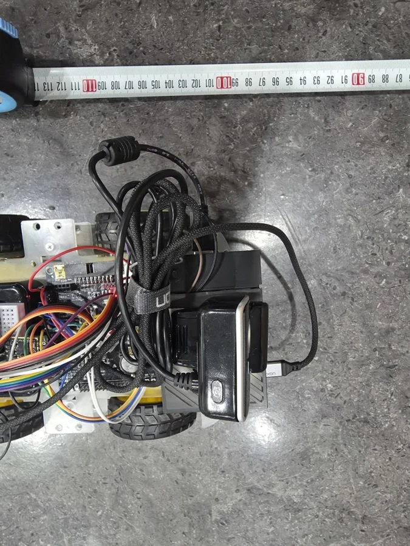

← 전체 프로젝트실제 로봇 · 팀 결과보고서 수록 사진 
대상 인식·트래킹 시연 화면
04 / EDGE AI / ROBOT CONTROL
Tracking Patrol Robot
시연 구현Pose·객체 인식 결과를 로봇의 추적 명령으로 연결한 순찰 로봇.

PROJECT OVERVIEW
어떤 시스템인가요?
Raspberry Pi의 비전 인식 결과를 STM32 주행 제어와 연결하고, 모바일 앱에서 수동 제어와 상태 확인을 제공하는 팀 프로젝트입니다.
MY ROLE인식 결과 기반 트래킹 로직 및 제어 시스템 연동
MY IMPLEMENTATION
- Pose 결과를 이용한 상황 판단과 우선순위 대상 선택
- Bounding Box 위치 기반 목표 방향과 주행 명령 연동
- 대상 유실 시 대기·탐색 및 색상 히스토그램 기반 재식별
- 대상이 화면에 보이는 크기에 따른 거리 조절 로직
- STM32 펌웨어·Yaw PID 일부 구현 지원
SYSTEM FLOW
데이터가 동작으로 이어지는 구조
- 01Camera / Pose
- 02RPi 트래킹
- 03UART
- 04STM32 / 모터
TEAM / EXTERNAL
AI 모델 학습·양자화와 STM32 센서·구동·PID의 주 구현은 팀원이 담당했습니다. 본인은 트래킹 로직을 주로 맡고 펌웨어·PID 구현 일부를 지원했습니다.
구현 코드 확인ENGINEERING NOTE
문제를 마주했을 때
문제와 판단
대상이 화면에서 사라지면 추적 상태를 그대로 유지하기 어려웠습니다. 유실 시 대기·회전 탐색 상태를 두고, 다시 나타난 대상의 색상 히스토그램을 비교하는 로직을 연동했습니다.
결과와 남은 한계
인식 결과에서 목표 방향을 만들고 로봇 제어까지 전달하는 시연을 구성했습니다.
재식별은 의복·조명 변화에 영향을 받습니다. 화재 대응과 장시간 무인 순찰은 검증하지 않았습니다.